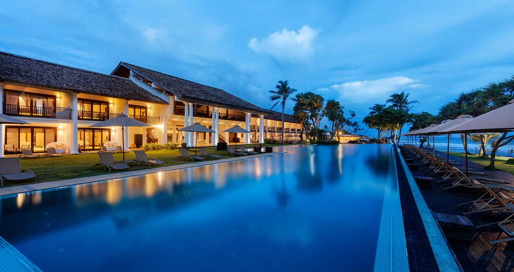

Un mundo de lujo y nuevos descubrimientos te esperan en The Fortress Resort & Spa. Combinando la elegancia atemporal y el diseño de estilo colonial con el telón de fondo de Galle Beach y sus alrededores, ofrecemos el escape costero perfecto para el romance y la aventura. Nuestro servicio de clase mundial, lujosas comodidades y experiencias ecológicas nos hacen realmente destacar entre los hoteles de Galle.
- COMODIDADES -
Queremos que sus vacaciones en nuestra exuberante isla tropical sean verdaderamente inolvidables. Es por eso que prestamos especial atención a todas sus necesidades para que podamos garantizar una experiencia diferente a cualquier otro hotel de lujo en todo el mundo. Sri Lanka ofrece el escenario perfecto con impresionantes vistas para el ocio, los negocios o un poco de ambos, y nuestras modernas instalaciones de resort de lujo y servicios exclusivos lo ayudarán a disfrutar plenamente de lo mejor de los dos mundos.
- Restaurantes -
Deleite su paladar con sabrosas cocinas internacionales y auténticas de Sri Lanka en uno de los restaurantes más solicitados de Galle. Los huéspedes de White pueden ver a nuestros hábiles chefs crear platos apetitosos y contemporáneos que fusionan especias tradicionales que están en línea con la cocina asiática. Para aquellos que prefieren la cocina internacional, se ofrece una variedad de pizzas al horno de leña y platos tandoori.
¿Tienes romance en mente? Duo es un restaurante único en su tipo en Galle, Sri Lanka, que se encuentra dentro de la bodega del complejo y ofrece un ambiente apacible iluminado con una suave luz de velas, que presenta un efecto completamente romántico. Acompañe su comida con un delicioso vino eligiendo entre una espectacular colección de más de 2000 vinos del viejo y nuevo mundo que van desde grandes clásicos hasta añadas excepcionales.
Nuestro restaurante al aire libre Salty Snapper en Galle es realmente único. Ubicado junto a la playa, este fabuloso lugar para cenar durante todo el día es perfecto para aquellos que buscan un restaurante de mariscos en Galle para relajarse, ya que ofrece acceso directo a la playa y brinda impresionantes vistas al océano. Deléitese con el contenido de su corazón con una tentadora variedad de manjares de mariscos complementados con una bebida especial o agua dulce de coco rey. Para el postre, pruebe algunos de nuestros helados caseros, incluido el helado 'pol sambol', bastante inusual pero completamente divino. Para obtener más detalles sobre nuestro menú o para organizar un evento en nuestro restaurante al aire libre en la playa, contáctenos al +94773955499 o al +94773403956
Relish a cup of world famous Ceylon tea while feasting your eyes on spectacular sea and garden views. A popular choice amongst cafes in Galle, our T-Lounge gives you the chance to not only sample premium hand picked teas, but also discover the story behind Ceylon tea and watch a special tea making ceremony too. Best of all is the chance to unwind with friends or family over a delicious cuppa and some delightful sweet treats.